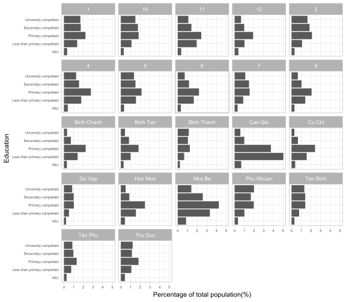
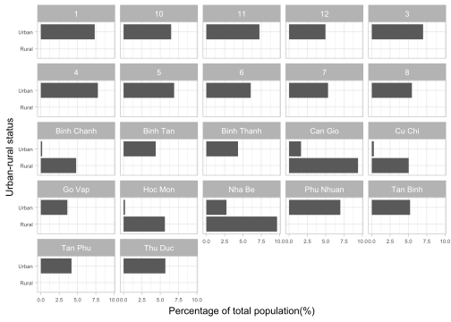

2 Demographic data from census 2019
3 Age pyramid
4 Population Density
District Population Area(km^2) Population Density
1 1 161975 7.72 20981.2176
2 10 239944 5.72 41948.2517
3 11 212448 5.14 41332.2957
4 12 489271 52.74 9277.0383
5 3 199914 4.92 40632.9268
6 4 174448 4.18 41733.9713
7 5 175828 4.27 41177.5176
8 6 261785 7.14 36664.5658
9 7 343530 35.69 9625.3853
10 8 403282 19.11 21103.1920
11 binh chanh 508490 252.56 2013.3434
12 binh tan 622294 52.02 11962.5913
13 binh thanh 515770 20.78 24820.5005
14 can gio 78240 704.45 111.0654
15 cu chi 419260 434.77 964.3260
16 go vap 664746 19.73 33692.1439
17 hoc mon 417053 109.17 3820.2162
18 nha be 119588 100.43 1190.7597
19 phu nhuan 182878 4.88 37475.0000
20 tan binh 395784 22.43 17645.2965
21 tan phu 516513 15.97 32342.7051
22 thu duc 965772 211.56 4565.00285 Economic variable
The wealth asset index was constructed by principal components analysis (PCA) using information on the ownership of dwelling, water supply, air condition, computer, washer, refrigerator, tv, radio, electricity, hot water, phone that are related to the household’s wealth. Follow https://pmc.ncbi.nlm.nih.gov/articles/PMC5348557/ and https://rpubs.com/Sternonyos/526030
Code
library(psych)
df$ownership <- ifelse(df$OWNERSHIP == 1,1,0)
df$watsup <- ifelse(df$WATSUP == 10,1,0)
df$aircon <- ifelse(df$AIRCON == 10,0,1)
df$computer <- ifelse(df$COMPUTER == 2,1,0)
df$washer <- ifelse(df$WASHER == 2,1,0)
df$refrig <- ifelse(df$REFRIG == 2,1,0)
df$tv <- ifelse(df$TV == 20,1,0)
df$radio <- ifelse(df$RADIO == 2,1,0)
df$electric <- ifelse(df$ELECTRIC == 1,1,0)
df$hotwater <- ifelse(df$HOTWATER == 2,1,0)
df$phone <- ifelse(df$PHONE == 2,1,0)
wealth_index <- df[,c("qh","ownership","watsup","aircon","computer",
"washer","refrig","tv","radio","electric",
"hotwater","phone")]
prn<- principal(wealth_index[,-1], rotate="varimax",
nfactors=3,covar=T, scores=TRUE)
index=prn$scores[,1]
nlab<-c(1,2,3,4,5)
newdata<-mutate(wealth_index,
quintile=as.factor(cut(index,breaks=5,labels=nlab)))
wealdf <- newdata %>% group_by(qh,quintile) %>% count()
wealdf$quintile <- case_when(
wealdf$quintile == 1 ~ "Poorest, 20%",
wealdf$quintile == 2 ~ "Near poor, 20%",
wealdf$quintile == 3 ~ "Middle, 20%",
wealdf$quintile == 4 ~ "Richer, 20%",
wealdf$quintile == 5 ~ "Richest, 20%") %>%
factor(levels = c("Poorest, 20%",
"Near poor, 20%",
"Middle, 20%",
"Richer, 20%",
"Richest, 20%")
)
wealdf %>% scale_per() %>%
ggplot() +
geom_col(aes(x = per,
y = quintile)) +
facet_wrap(vars(qh),
# scales = "free",
ncol = 5)+
labs(x = "Percentage of total population(%)",
y = "Socioeconomic status (quintile)")+
theme_light()+
theme(axis.text.x = element_text(size = 6),
axis.text.y = element_text(size = 6))
4.1 Social Variable


Ownership of dwelling